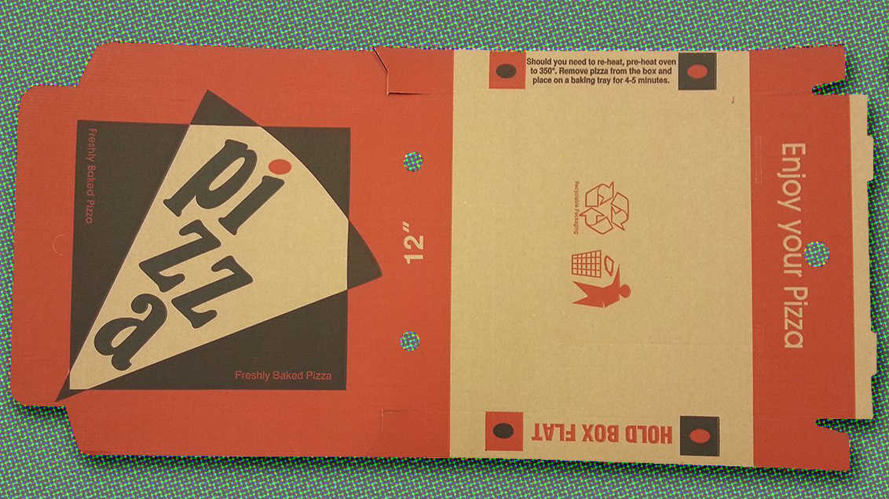
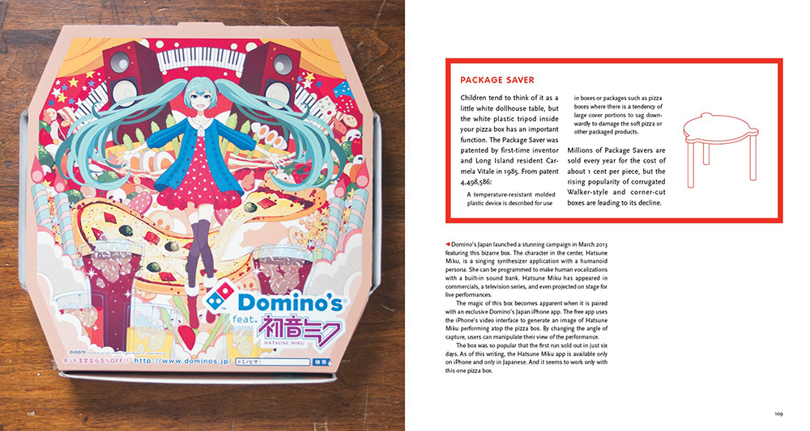
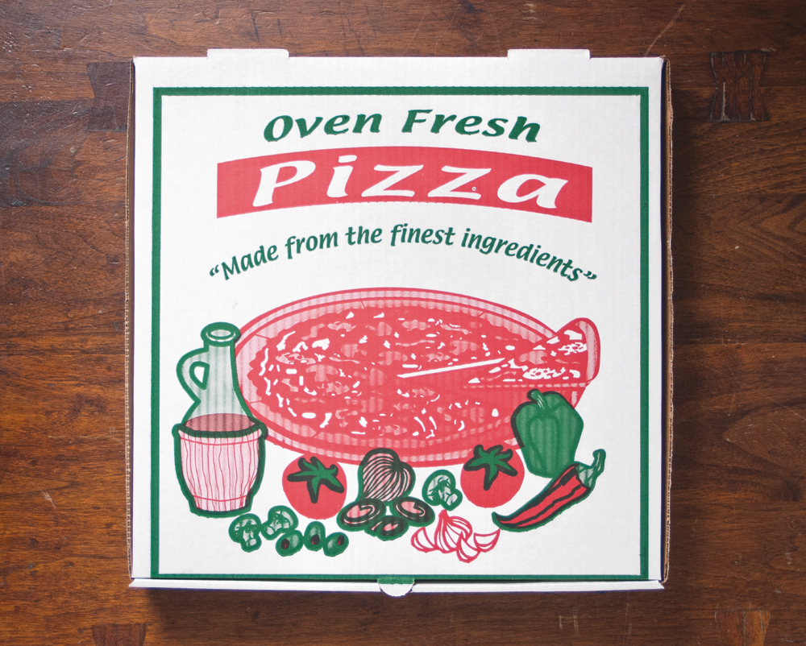

En las cajas de pizza también se puede hacer diseño
- POR
- EDUARDO BRAVO
- 09 ENERO 2018
Hay colecciones y coleccionistas para todos los gustos. Hay gente que atesora sellos, libros, automóviles, joyas, cromos y hasta cajas de pizzas. Es el caso de Scott Wiener, un neoyorquino que ostenta el récord Guinness por la colección de cajas de pizza más grande del mundo. Tiene más de 700 cajas procedentes de todos los rincones del mundo y medio centenar de países. Su primera pieza la encontró durante un viaje a Israel y ahora, después de más de una década acumulando, ha hecho de su afición una forma de vida.
Además de publicar Viva la pizza!, un volumen en el que se recogen un centenar de piezas de su colección, Wiener escribe en Pizza Today Magazine y gestiona Scott’s Pizza Tours, una agencia de viajes que organiza paseos por las mejores pizzerías de Nueva York y explica detalles sobre sus variedades, los ingredientes, las formas de cocinarlas y, por supuesto, las cajas.
Desde finales del siglo XIX existían accesorios para vender pizza por las calles y poder transportarlas a los domicilios de los clientes. Se trataba de latas de metal que, además, mantenían el producto caliente.
Con el tiempo, las latas fueron sustituidas por envoltorios de papel encerado y, después, por cajas de cartón que tenían la ventaja de que se podían apilar. Además, los restaurantes comenzaron a imprimir en ellas información sobre el local y sobre sus especialidades, y a veces también motivos ornamentales.
«En mi opinión, las cajas de pizza son la forma menos valorada de arte», afirmaba Wiener a la publicación Graphics.com. «De hecho, en muchas ocasiones, son las propias pizzerías las que menos atención les prestan. En Nueva York, los mejores restaurantes son los que peores cajas tienen».

Las cajas de pizza suelen ser productos efímeros. Su fin es el cubo de reciclaje de papel, razón por la cual suelen estar diseñadas a pocas tintas e impresas con máquinas que no suelen ser muy precisas. Una decisión cuyo objetivo principal es abaratar costes y que provoca que los colores suelan tener fallos de registro. En otras palabras: las planchas no siempre ajustan bien y ese desplazamiento hace que se superpongan las tintas, lo que no deja de ser un atractivo estético añadido.
A pesar de su afición por las cajas de pizza, Scott Wiener no ahorra críticas al sistema. A pesar de llevar más de 60 años en el mercado, su diseño apenas ha cambiado y, en opinión de este experto, es bastante defectuoso. «Aún no han solucionado el modo de que el vapor salga de la caja correctamente». ¿Algún diseñador industial en la sala?
 Pedir unas pizzas